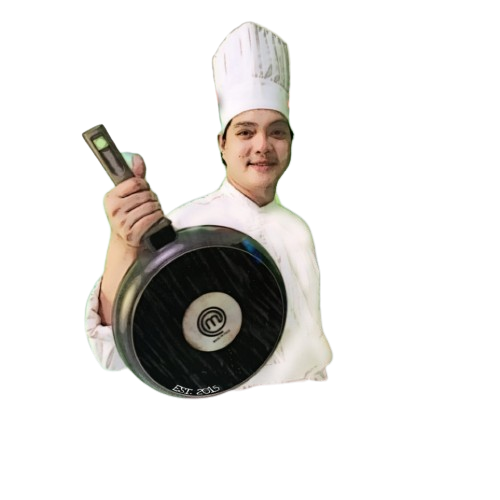

<!DOCTYPE html>
<html lang="en">

    <meta charset="UTF-8">
    <meta name="viewport" content="width=device-width, initial-scale=1.0">
    <title>Cocosinero | About Us 
    </title>
    <!-- Favicon -->
    <link rel="icon" type="image/png" href="/MRB/IMAGE/favicon.ico">
    <!-- Link source -->
    <link rel="preconnect" href="https://fonts.googleapis.com">
    <link rel="preconnect" href="https://fonts.gstatic.com" crossorigin>
    <link href="https://fonts.googleapis.com/css2?family=Poppins:wght@300;400;500;600;700;800;900&display=swap" rel="stylesheet">

    <!-- External Style -->
    <link rel="stylesheet" href="/MRB/CSS/css_about/cocosineroAboutUs.css">

    <!-- Link source -->
    <link rel="preconnect" href="https://fonts.googleapis.com">
    <link rel="preconnect" href="https://fonts.gstatic.com" crossorigin>
    <link href="https://fonts.googleapis.com/css2?family=Poppins:wght@300;400;500;600;700;800;900&family=Rubik:wght@500&display=swap" rel="stylesheet">
    <script src="https://kit.fontawesome.com/a076d05399.js" crossorigin="anonymous"></script>
    <!--Style in js button dropdown menu -->
    <style>
        .show{
            height: 40vh;
        }
    </style>
</html>
<body>
    <!--Header Content-->
    <header>
        <h1><a href="../Index/index.html">Cocosinero</a></h1>
        <ul class="navList" id="ull">
            <li><a class="homeAct" href="../Index/index.html">Home</a></li>    
            <li><a class="menuAct" href="/MRB/HTML/html_menu/cocosineroMenu.html">Menu</a></li> 
            <li><a class="contactAct" href="/MRB/HTML/html_contact/cocosineroContact.html">Contact</a></li> 
            <li><a class="qstoryAct" href="../html_aboutUs/cocosineroAboutUs.html">About Us</a></li> 
        </ul>
        <button id="op" class="btn-navList">MENU</button>

    </header>
    <!-- Main and thier section -->
    <main>
        <section>
            <div class="quality-roots">
                
                    <div id="section-one">
                        <h1 class="text-line">About Us</h1>
                        <div id="info-p"><p>The main branch operates as a<br> semi self-service establishment, <br>open to everyone and accesible<br> to all.</p>
                        <a  class ="read-more-link" href="#idchef" >Read More</a>
                        </div>
                    </div>
            </div>
        </section>
        
        <section>
            <div class="text-four">
                
                    <div class="section-four">
                        <h1 class="text-four">KNOW MORE ABOUT US</h1>
                        <div class="info-four">
                            <p>Cocosinero Lomi House is a full-time venture, and it has been thriving for approximately 3 and a half years.
                            The business originated from customer requests and widespread belief in our offerings.started promoting online since July 16, 2020 and began offering dine-in services on October 18. Our prominence is credited to social media and our unwavering commitment to excellent service. What sets us apart is our unique combination of love and passion for our work, with our priority being the fulfillment and satisfaction of our customers. They continue to return due to the cleanliness and unforgettable taste we consistently deliver.
                            </p>
                        </div>
                        <a class="view-tab" href="../html_menu/cocosineroMenu.html">View Menu</a>
                    </div>
            </div>    
        </section>

        <section>
            <div class="cocosinero-team">
                <h1 class="head-text-five" id="idchef">Our Chef</h1>
                '
                    <div class="section-five" >
                        <h2 class="newline-five" >Chef Cocosinero</h2>
                        <div class="info-five">
                            <p>Leomar Pajarin Villaspin is the owner and the driving force behind this thriving business, credited to his diligence and culinary expertise. 
                                His adept management skills have contributed to the widespread popularity of this establishment, known for its affordable yet high-quality food. 
                                A notable quote encapsulating the experience: "A taste that you'll remember."</p>
                            <br>
                            <br>
                        </div>
                    </div>
            </div>
        </section>
    </main>
    <!--Footer Content -->
    <footer>
            <!--Starting Footer-->
        <div class="footer-all-div">
            <h1 class="footer-home"><a href="../Index/index.html">Cocosinero</a></h1>
            
            <div class="hours-div">
                Hours & Location
            </div>
                <h4 class="openHrs-div">
                    Open 10:00am - 9:00pm
                    <br>
                    Monday-Sunday</h4>
            <div class="nav-loc-hour">
                <a href="https://www.google.com.ph/maps/place/COCOSINERO+Lomi+House/@14.1068728,122.9541236,18z/data=!4m16!1m9!4m8!1m0!1m6!1m2!1s0x3398af749124b7c9:0x723d58c6cf2e6473!2sDoor+1,+COCOSINERO+Lomi+House,+Rodriguez+Apartment,+Joselito+St,+Pasig,+Camarines+Norte!2m2!1d122.9553907!2d14.106899!3m5!1s0x3398af749124b7c9:0x723d58c6cf2e6473!8m2!3d14.1068728!4d122.955395!16s%2Fg%2F11mtm88lh5?entry=ttu" target="_blank">COCOSINERO Lomi House, Joselito St,
                <br> Pasig, Camarines Norte</a>
            </div>
            <!--Site Map Footer-->
            <div class="footer-nav-map">
                <h2 class="site-map">Site Map</h2>
                <a href="../Index/index.html">Home</a>
                <a href="../html_aboutUs/cocosineroAboutUs.html">About Us</a>
                <a href="../html_menu/cocosineroMenu.html">Food Menu</a>
                <a href="../html_contact/cocosineroContact.html">Contact Us</a>
            </div>
            <!--Social Site Footer-->
            <div class="footer-social">
                <h2 class="cocosineroSocial">Social Site</h2>
                <a href="https://www.facebook.com/cocosinero" target="_blank">
                Facebook
                </a>
            </div>

            <div class="qualityfoods">#QUALITY FOODS <br> #DELICIOUS <br> #EATSPECIALOVERLOAD</div>
            <!--Copyright for the developer of website-->
            <div class="footer-copyRight">
                &copy;
                <a href="http://www.facebook.com/cocosinero" target="_blank">Cocosinero</a>
                2023 Design & Develop by
                <a href="https://www.facebook.com/gygy.belisano" target="_blank">MRB</a>
            </div>
        </div>
    </footer>
        <!--Script button for navigation in dropdown menu-->
        <script>
            var op = document.getElementById("op"),
            ul = document.getElementById("ull");
    
            op.addEventListener('click', function(){
                ul.classList.toggle('show');
                console.log(ul.classList)
                console.log(op.textContent)
                if ('MENU' == op.textContent){
                    op.textContent = 'EXIT'
                }else{
                    op.textContent = 'MENU'
                }
            })
            </script>

</body>    
